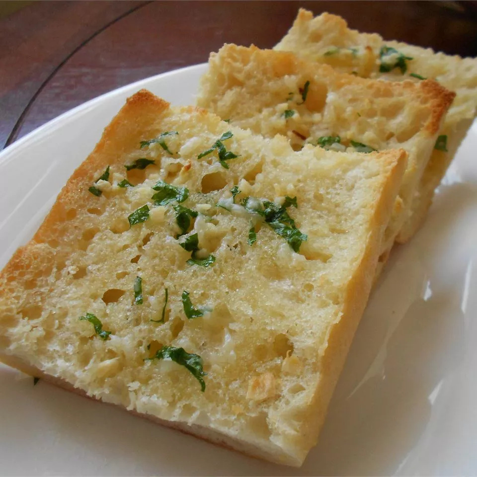

Garlic bread

Description
Easy roasted garlic bread made with roasted garlic, butter, and Parmesan cheese.
Ingredients
- 3 heads garlic
- 2 tablespoons olive oil
- 1 loaf Italian bread
- 1/2 cup butter, softened
- 2 tablespoons grated Parmesan cheese (optional)
- 1 tablespoon chopped fresh parsley (optional)
Steps
- Preheat the oven to 175 degrees C.
- Slice the tops off of garlic heads, so the tip of each clove is exposed. Place garlic heads, cut-sides up, on a baking sheet; drizzle tops with olive oil.
- Bake in the preheated oven until garlic is soft, about 30 minutes.
- Set the oven to broil.
- Slice bread loaf in half horizontally; place cut-side up on a baking sheet.
- Squeeze garlic cloves from their skins into a medium bowl. Stir in butter, Parmesan cheese, and parsley until well blended. Spread onto the cut sides of bread.
- Broil bread until toasted, about 5 minutes.
Link to AllRecipes
CLICK ME
- and watch this recipe along with many others on allrecipes.com